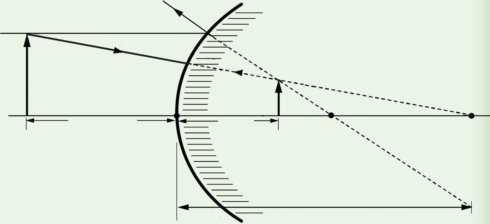

Example 4.4
An object 5 cm long is placed on and perpendicular to the principal axis of a convex mirror of radius of curvature 20 cm.Use a scaled diagram to find the position, size and nature of the image when the object is 10 cm from the pole of the mirror.
Solution
The height of the object is 5 cm, the object distance is 10 cm, the radius of curvature is 20 cm, and the focal length is −10 cm.
Scale:1 cm represents 5 cm.
From the scale:Height of object = 1 cm, object distance = 2 cm and focal length −2 cm
1.Draw a convex mirror with the pole P.
2.Locate the focal point and object position by using the provided values.
3.Draw any two of the rays stated in the laws of reflection for a convex mirror as shown in Figure 4.28.

4. The object’s image is constructed by considering the reflection of the rays OA and ON.After reflection, the ray OA appears